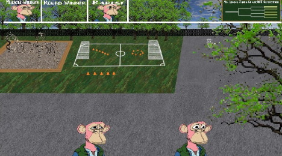
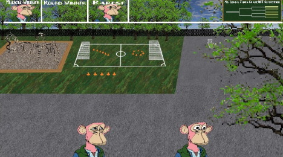

PFP MADNESS
This piece is one artist’s attempt at mocking the current state of the NFT ecosystem today. The scene
depicts the ongoings of an elementary school playground. Instead of enjoying their time outside, the kids
are huddled up on the pavement battling with their PFPs.
The scene pokes fun at the current industry by highlighting that the current discourse around NFTs is no different than children arguing about Pokemon cards. Glory (on the playground at least) comes to whomever has the rarest card- ignoring more important criteria not appreciated by this specific school class or at this young age.
The scene also takes inspiration from the parody rap battles of the 2010’s. They too poked fun at a trend which had a widely popular following. Similar to rap battles the winner is determined not by being the “best” but instead by some unknown criteria determined by the listeners. In PFP Madness, the winner of each round is not necessarily the rarest.
The scene pokes fun at the current industry by highlighting that the current discourse around NFTs is no different than children arguing about Pokemon cards. Glory (on the playground at least) comes to whomever has the rarest card- ignoring more important criteria not appreciated by this specific school class or at this young age.
The scene also takes inspiration from the parody rap battles of the 2010’s. They too poked fun at a trend which had a widely popular following. Similar to rap battles the winner is determined not by being the “best” but instead by some unknown criteria determined by the listeners. In PFP Madness, the winner of each round is not necessarily the rarest.
DISTRIBUTION
PFP Madness plays a single competition a day. At the end of the week a winner is selected from the
competition set. This winner is turned into a separate PFP NFT published to the blockchain - immediately
generated to the wallet of whoever owns this piece.
After a new NFT is generated, the probability distribution of each possible feature is adjusted - reducing it’s likelihood. This makes owning one of these PFPs a bet on the rarity of its individual features in the future final generated set.
After a new NFT is generated, the probability distribution of each possible feature is adjusted - reducing it’s likelihood. This makes owning one of these PFPs a bet on the rarity of its individual features in the future final generated set.
 
